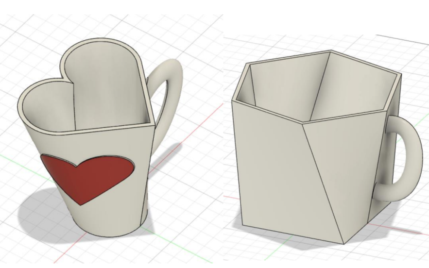
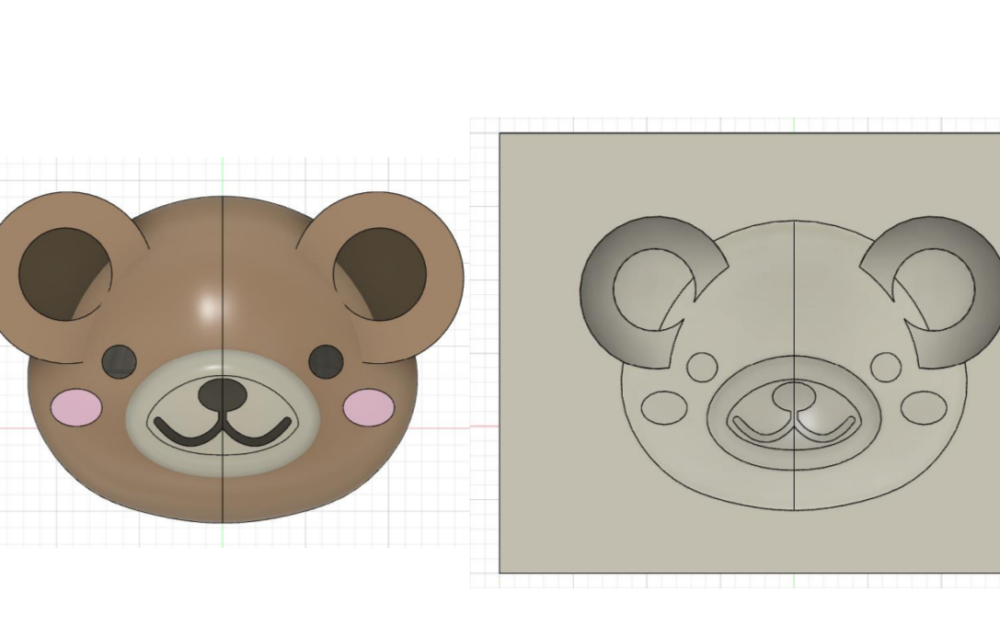
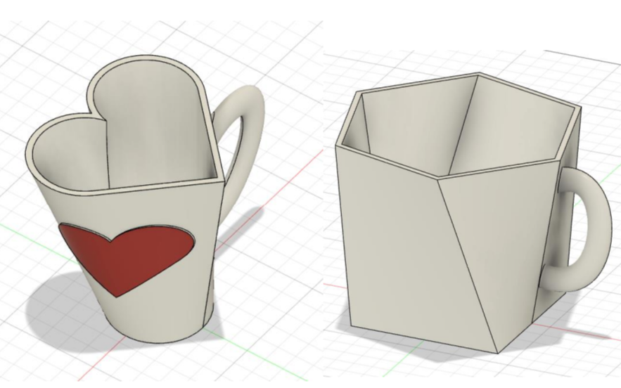
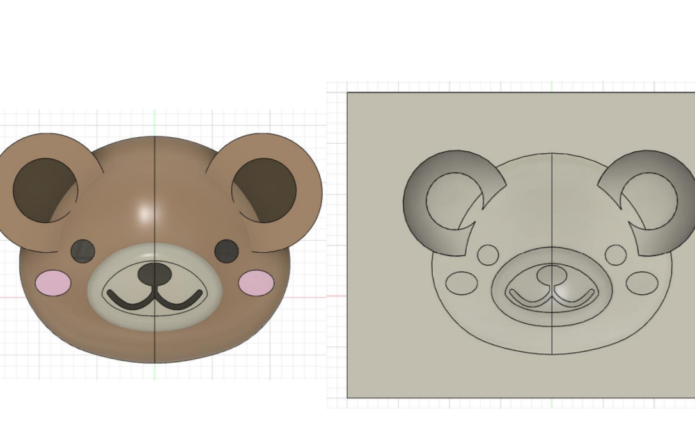

実験実習
- 機械工作実習1
- 機械工作実習2
- エネルギー機械実験1
- エネルギー機械実験2
2年生では，前期にMコースの実験実習，後期にDコースの実験実習を行います．

Mコースの実験実習ではこのようなフライス盤，旋盤，ボール盤などの汎用工作機械を用いて部品を製作します．
Dコースの実習では以下のようなソフトを用いてこのようなモデルを作成します．
Fusion Autodeskこのコースでは、エネルギーの生成や利用、機械の設計や制御具体的には、機械工学概論・基礎製図・エネルギー変換工学などの分野を学ぶことができます。理論だけでなく実践的な技術も身につけることができます。修了すると、エネルギーや機械専門に関するような知識と技術を持ったエンジニアとして、様々な分野で活躍することができます。そのため、中学校を卒業した直後から専門的な知識を学ぶことができます。
2年生では，前期にMコースの実験実習，後期にDコースの実験実習を行います．
Mコースの実験実習ではこのようなフライス盤，旋盤，ボール盤などの汎用工作機械を用いて部品を製作します．
Dコースの実習では以下のようなソフトを用いてこのようなモデルを作成します．
Fusion Autodeskエネルギーを無駄なく活用する機械のあり方と創り方を学びます！ 君家 直之 教授
少しでも本校に興味を持っていただけたらぜひ，体験入学に来ていただきたいです！お持ちしております^^
大阪公立大学工業高等専門学校体験入学ページ